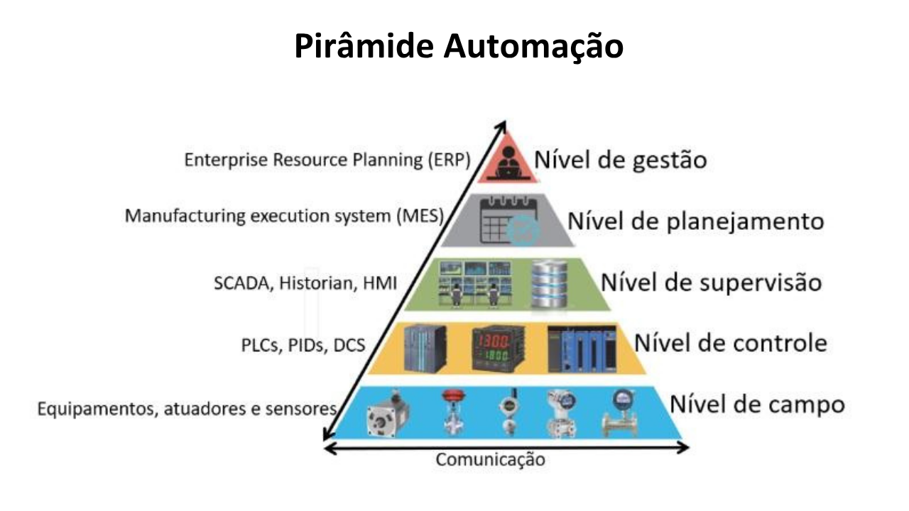

Automação Industrial
Como uma fábrica organiza seus equipamentos e como eles conversam entre si.
Pirâmide da automação

A pirâmide divide a automação em cinco níveis. Na base ficam os equipamentos que mexem com o processo e, quanto mais perto do topo, mais os dados viram informação para a gestão da empresa. A comunicação entre os níveis é feita pelas redes industriais.
Nível de gestão
Sistema ERP. Cuida da empresa como um todo: vendas, compras, estoque e finanças.
Nível de planejamento
Sistema MES. Organiza e acompanha a produção: ordens de fabricação, tempos e qualidade.
Nível de supervisão
SCADA, Historian e IHM. Telas para ver e comandar o processo, com alarmes e histórico de dados.
Nível de controle
CLPs, PIDs e DCS. Processam a lógica, leem as entradas e comandam as saídas.
Nível de campo
Sensores, atuadores e equipamentos, como motores e válvulas. É onde o processo acontece de verdade.
Rede PROFINET
A PROFINET é uma rede industrial baseada em Ethernet, muito usada nos equipamentos da Siemens. Ela liga o CLP aos outros dispositivos usando cabo de rede comum (RJ45), com troca de dados rápida e em tempo real.
IO-Controller
É quem controla a rede. Normalmente é o CLP.
IO-Device
Dispositivos de campo que trocam dados com o CLP, como módulos de entradas e saídas, inversores e sensores.
IO-Supervisor
Computador usado para programar, configurar e diagnosticar a rede, como o que roda o TIA Portal.
Cada dispositivo na rede tem um nome e um endereço IP, e a rede pode ser montada em linha, estrela ou anel.
Na pirâmide, a PROFINET liga o nível de campo ao de controle e também leva os dados do CLP para o nível de supervisão.
CLP utilizado no projeto
Veja o modelo e as características do controlador
Ver CLP →